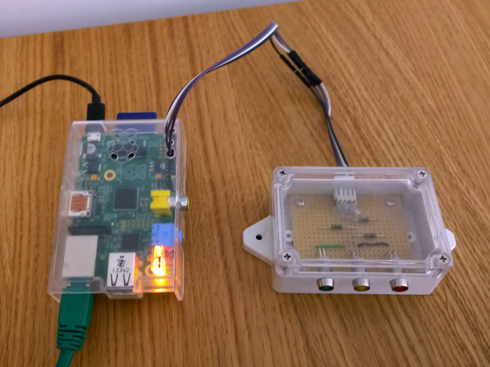

piLED
A RaspberryPi based LED notification for minecraft servers (Java)
Overview
piLED is a traffic light based minecraft server notification system using a RaspberryPi. You will need a RaspberryPi running a minecraft server which is connected to the physical hardware described in this guide. The LEDs indicate whether the server is running or not (red), if someone is logged in locally (amber) or if someone is logged in from outside (green). This has been tested on both Spigot and Glowstone implementations of the minecraft sever but should work on any other server type that will work on the RaspberryPi and accepts plugins. 
How to use
As soon as I figure out releases this will work properly If you are not interested in playing with the code then just download the latest .jar file, copy it to your minecraft server plugins folder and follow the hardware guide below. If you want to play then download the whole project from the links on the left. It was built in Eclipse using the Maven framework.
Schematic
Bear with me for a day or 20 while I fill all this in properly!  Go ahead and click 'Continue to layouts' to browse through them. You can easily go back to edit your page before publishing. After publishing your page, you can revisit the page generator and switch to another theme. Your Page content will be preserved.
Go ahead and click 'Continue to layouts' to browse through them. You can easily go back to edit your page before publishing. After publishing your page, you can revisit the page generator and switch to another theme. Your Page content will be preserved.
Creating pages manually
If you prefer to not use the automatic generator, push a branch named gh-pages to your repository to create a page manually. In addition to supporting regular HTML content, GitHub Pages support Jekyll, a simple, blog aware static site generator. Jekyll makes it easy to create site-wide headers and footers without having to copy them across every page. It also offers intelligent blog support and other advanced templating features.
Authors and Contributors
You can @mention a GitHub username to generate a link to their profile. The resulting <a> element will link to the contributor’s GitHub Profile. For example: In 2007, Chris Wanstrath (@defunkt), PJ Hyett (@pjhyett), and Tom Preston-Werner (@mojombo) founded GitHub.
Support or Contact
Having trouble with Pages? Check out our documentation or contact support and we’ll help you sort it out.